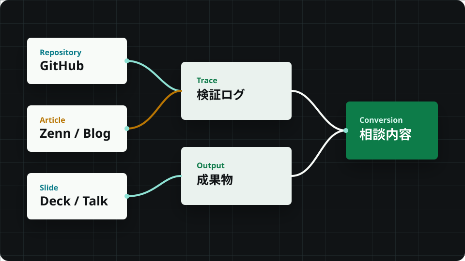

何から検証すべきか決まらない
RAG、AIエージェント、自動化が候補に並ぶほど、初手の優先順位が曖昧になります。

GitHub、記事、登壇資料、検証ログで言ったことを裏づけながら、課題整理から実装方針、検証計画まで伴走します。
Problem
ベンダー提案や流行語だけでは、何を試し、何を捨て、どこから実装するかを決めづらい。評価者が必要としているのは、抽象論ではなく、動いた痕跡と検証の筋道です。
RAG、AIエージェント、自動化が候補に並ぶほど、初手の優先順位が曖昧になります。
きれいな提案書より、GitHub、設計、失敗ログ、改善履歴を見たい評価者がいます。
デモは動いても、運用、例外処理、評価指標、社内説明の設計が抜けると止まります。
Solution
このLPは「問い合わせしてください」だけを迫りません。先に証拠、判断基準、成果物の型を見せてから、必要な人だけが相談に進める構造です。
曖昧なAI導入希望を、業務影響、データ状態、失敗コスト、初期評価指標に分解します。
公開コード、記事、登壇資料、検証ログを同じ流れで見せ、判断の根拠を残します。
問い合わせ後は、目的、制約、既存資産、リスク、次の検証単位を整理して返します。
Difference
AI領域は更新が速いからこそ、肩書きより更新履歴が効きます。最新の学び、失敗の理由、採用しなかった選択肢まで見える導線を重視します。
Evidence
実URLは未設定のため、今は証拠の種類、見せ方、接続予定を明示しています。本番公開前に各カードを実在URLへ差し替える設計です。
Outputs
「話して終わり」ではなく、社内説明、実装開始、外部委託、追加検証に再利用できるアウトプットを前提にします。
目的、現状、制約、失敗リスク、期待成果を1枚で確認できる状態にします。
評価指標、対象データ、スコープ、停止条件、次に捨てる案まで決めます。
LLM、RAG、エージェント、自動化のどれを選ぶか、構成と運用面から提案します。
公開できる範囲で、コード、記事、図、登壇資料、検証ログを評価者向けに並べます。
Process
課題、背景、関連URL、希望時期をフォームから送ります。
AIで解くべきか、既存自動化で足りるか、検証単位を切ります。
小さく試せる入力、成功条件、失敗時の戻り先を決めます。
実装、レビュー、ドキュメント化、社内説明まで範囲を調整します。
FAQ
FAQはすべて開閉でき、開いた項目は `faq_expand` として計測できます。
できます。最初は課題整理、現状整理、検証テーマの優先順位づけから始めます。
仕様、技術検証、プロトタイプ、実装方針の整理までを基本範囲とし、実装伴走は内容に応じて調整します。
公開できない情報は伏せた概要で相談できます。必要な場合は個別に秘密保持の前提を確認します。
現時点では1営業日以内を仮定しています。正式な返信SLAは運用体制確定後に更新します。
料金体系は未確定です。初回相談では、課題の大きさ、公開可否、実装範囲、急ぎ度をもとに見積もります。
Contact
AI導入の相談、LLM/RAG検証、技術発信、登壇、記事執筆、採用面談まで、目的に近い種別を選んで送ってください。
Lead form
このフォームは静的環境で検証できるよう、送信後にサンクスページへ遷移します。本番では `POST /api/lead` に差し替える想定です。